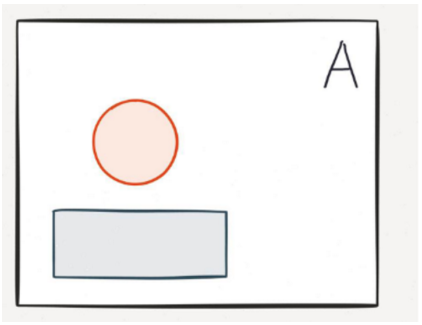
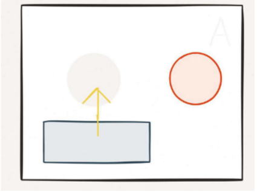
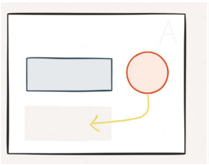
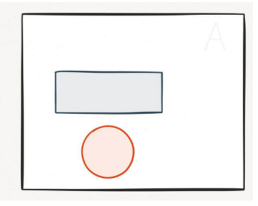

Hacking Time With Redux
React Key Points
Composeable Component Model, not a Framework
React Key Points
Composeable Component Model, not a Framework
Co-located Template and Code (JSX)
React Key Points
Composeable Component Model, not a Framework
Co-located Template and Code (JSX)
No Two-Way Binding
React Key Points
Composeable Component Model, not a Framework
Co-located Template and Code (JSX)
No Two-Way Binding
Functional View Layer...ideally
Flux Key Points
Architectural Style, Not a Framework

Flux Key Points
Architectural Style, Not a Framework
One-Way Data Flow
Flux Key Points
Architectural Style, Not a Framework
One-Way Data Flow
Views Emit Actions
Flux Key Points
Architectural Style, Not a Framework
One-Way Data Flow
Views Emit Actions
Shared Data-Stores
“Stores contain the application state and logic. Their role is somewhat similar to a model in a traditional MVC, ... stores manage the application state for a particular domain within the application.“
Flux Key Points
Architectural Style, Not a Framework
One-Way Data Flow
Views Emit Actions
Shared Data-Stores
Actions Resolve to State Updates
Redux is a Flux Implementation
A Borrowed Analogy
|  |  |
|  |  |
Redux is The Genie
Redux is a State Container
State is Global Tree
State is Immutable
New States are Created In Response to Actions by Reducers
function reduce(state={}, action) {
< return new state>
}
Reducers are pure and synchronous
No I/O
No Side Effects
No Mutations or Arguments
Reducers can be composed to decompose state among domains
import { combineReducers } from "redux";
const reducer = combineReducers({
auth,
analytics,
routing
});
export default reducer;
A Global Store is Created from the Root Reducer
import { createStore } from "redux";
import rootReducer from "../reducers";
const store = createStore(rootReducer);
export default store;
Middleware Can Be Injected Into Stores
import { applyMiddleware, createStore } from "redux";
const promiseMiddleware = require("redux-promise");
const createLogger = require("redux-logger");
import rootReducer from "../reducers";
const finalCreateStore = applyMiddleware(
promiseMiddleware,
createLogger()
)(createStore);
const store = finalCreateStore(rootReducer);
export default store;
Actions Can Be Asynchronous
Actions Have a Type and Payload
import { User } from "./models/User";
import { createAction } from "redux-actions";
import { authAPI } from "./AuthAPI";
// Action Creators
export const requestCurrentUser = createAction(
"REQUEST_CURRENT_USER",
authAPI.getCurrentUser // HTTP Promise Function
);
export const logout = createAction(
"REQUEST_LOGOUT",
authenticationSource.logout // HTTP Promise Function
);
Reducer Action Handling
export default function auth(state = {}, action) {
switch (action.type) {
case REQUEST_CURRENT_USER:
if (action.error) {
return { currentUser: null, error: action.payload };
} else {
return { currentUser: action.payload };
}
break;
case REQUEST_LOGOUT:
return {};
default: {
return state;
}
}
}
Wiring Flux to Views
import { Provider } from "react-redux";
import store from "./store";
class Application extends React.Component {
render() {
return (
<Provider store={store}>
// Application Structure
</Provider>);
}
};
Wiring Flux to Views
import { connect } from "react-redux";
class UserName extends React.Component {
render() {
const userName = this.props.currentUser.name;
return (<div>{userName}</div>);
}
};
export default connect(
state => ({
currentUser: state.app.auth.currentUser,
})
)(UserName);
Wiring Flux to Views
class LogOutButton extends React.Component {
render() {
return (<button> onClick={this.logout}>Logout</button>);
}
logout() {
this.props.dispatch(authActions.logout());
}
};
export default connect()(LogOutButton);
Redux is Not Exclusive to React
import * as CounterActions from '../actions/counter';
class CounterController {
constructor($ngRedux, $scope) {
let unsubscribe = $ngRedux.connect(
this.mapStateToThis,
CounterActions
)(this);
$scope.$on('$destroy', unsubscribe);
}
mapStateToThis(state) {
return {
value: state.counter
};
}
}